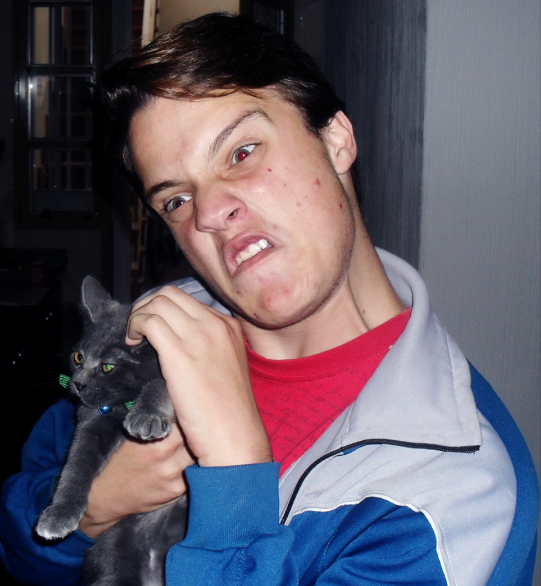

Sergio Bressán |
||
Nacido en el planeta Tierra, este fenómeno extraño de la naturaleza propuso una visión brillante de cómo ser un gran político para organizar el país. Él es antiracista, antipobre, judío y blanco. Sus ideologías cada día van ganando más terreno, a medida que la gente boluda se vaya acumulando.
Tan pacifista y libertador, este inútil, sobador, va a lograr lo que los otros mandracos no pudieron hacer, tal como Joseph Stalin o Adolf Hitler, que es controlar el mundo, masturbando las mentes de sus seguidores y así lograr que todos sus integrantes, ya sean humanos, animales o extraterrestres vivan en la felicidad y en la ignorancia. |
Bressán está feliz, ahora vamos a romper toda tu casa. |
|
|
Todo humano, como este acá, empieza su formación en los testículos de un hombre (el cual desconocemos el nombre lamentablemente), y los testículos están recubiertos por el escroto y ese escroto contiene vellos, sí, los contiene, aunque suene mal para las mujeres. Luego, llega el acto sexual (acá no estamos para dar educación sexual), donde con la excitación producida por una mujer u otra persona ajena a ella en la imaginación del hombre, genera una expulsión de bressanitos que navegan a través de los testículos hasta llegar al miembro del hombre, donde contiene restos de residuos líquidos, por lo tanto se entremezclan y pasan al útero de la mujer. Allí, uno sólo pudo cortejar al óvulo y pudo procrearse, mientras que los otros millones se quedaron con las ganas de dominar el mundo.
Y bueno, lo único que queda es esperar unos 8 meses sin tener ganas de un aborto, con una alimentación sana, total, si nace enfermo o no, va a nacer igual. Este señor pudo ver la luz al salir de un tremendo agujero negro. Cuando se estaba por tirar la cadena se vio algo que no era como los otros, no era una larga tira de caca, no en su totalidad, era un ser humano, de color bien definido, negrito café. Con un olor tremendo a bosta, junto con el agua y residuos humanos, fue llevado a una cámara de desinfección para no contagiar de SIDA (ni de cáncer) a ninguna persona. Así fue como nació este engendro y poco a poco, engordando, enflaqueciendo, aumentando y bajando de altura, un brazo más, un brazo menos, un dedo más, un dedo menos, fue creciendo y educado por negros, algo increíblemente bueno si se dan cuenta. A los 6 años, empezó a competir en las guerras de lucha en el lodo infantiles, peleando y amazando a piñas a todos sus contricantes. Gracias a su excelente camuflaje que le ofrecía el lodo ganó el premio al negro más negro y más negro jamás conocido por la humanidad, y cuando me refiero a negro, me refiero a sus cientos de significados insultantes que tiene. A los 10 años fue víctima de varios abusos sexuales, al cual el remedió diciendo que fueron lo mejor que pasó en su vida y que le gustaba ese líquido rojo que salía en su parte trasera. Los violadores agradecieron públicamente este hecho diciendo que gracias a él las autoridades no les hicieron nada y pudieron seguir con su vida normal. Fue uno de los grandes ejemplos de los principios del Bressanismo. |
Nacimiento: 1995 (y ojalá que no muera).
Edad: 16.
Apodos: Hitler, Granudo, Srch, Serch, Serchi, Sergi, Checho, Barbudo, Sambre, Homosexual, Gay, Traba, Transexual, Frentudo, Cogote, Blanco, Judío, Racista, Colita, Chancho, Chanchi.
Lugar de procedencia: Recto anal.
Dedicación: joder negros. Estado actual: tirarse pedos con un tremendo olor a azufre mientras organiza el país.
Enemigos: su miembro.
Poderes: mostrar las tremendas encías al reírse.
Cabello: con el hopo. Ojos: verdes/azules, de acuerdo a la discapacidad visual de la persona.
Altura: 1,73 metros. Peso: 80 kilos. Pechos naturales: sí. |
|
Aquí es donde ya deja de ser un niñito y empieza a tener malos modales. Donde comienza a trabajar como un esclavo y deja atrás sus lindos pasatiempos mágicos. |
 Bressán también adivina el futuro. |
|
A lo largo de la historia, Sergio Bressán ha dicho frases bastantes importantes, signos de Bressanismo puro, como las que veremos a continuación: |
||